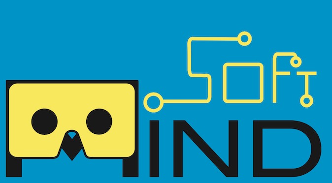

Na tela: um dedo gira. Dois dedos: pinça dá zoom, arrastar move e torcer gira em Z.
Permita o acesso à câmera quando o navegador pedir.

Imprima esta imagem ou abra-a em outra tela (computador ou tablet) e aponte a câmera do celular para ela. No computador, acesse
A câmera foi desligada. Obrigado por explorar o Sistema Solar!